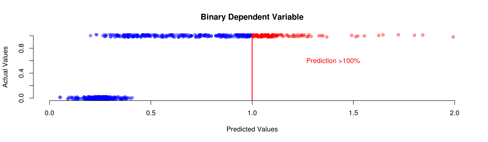

2 Binary Models – Logit and Probit
Binary dependent variables are frequent in social science research…
- … why does somebody vote or not?
- … why does a country go to war or not?
- … why does a legislator vote yes or no?
- … why do some countries have the death penalty and other not?
2.1 The Linear Probability Model
The linear probability model relies on linear regression to analyze binary variables.
\begin{eqnarray} y_i & = & \beta_0 + \beta_1 \cdot x_{1i} + \beta_2 \cdot x_{2i}+ ... + \beta_k \cdot x_{ki} + \varepsilon_{i}\\ Pr(y_i=1|x_1, x_2, ...) & = & \beta_0 + \beta_1 \cdot x_{1i} + \beta_2 \cdot x_{2i}+ ... + \beta_k \cdot x_{ki} \\ \end{eqnarray}2.1.1 Advantages
- We can use a well-known model for a new class of phenomena
- Easy to interpret the marginal effects of \(x\) variables
2.1.2 Disadvantages
The linear model needs a continuous dependent variable, if the dependent variable is binary we run into problems:
Predictions, \(\hat y\), are interpreted as probability for \(y=1\)
[\(\rightarrow\) \(P(y=1) = \hat y = \beta_0\)+\(\beta_1 x\), can be above 1 if \(x\) is large enough]{}
[\(\rightarrow\) \(P(y=0) = 1- \hat y = 1 - \beta_0\)+\(\beta_1 x\), can be below 0 if \(x\) is small enough]{}The errors will not have a constant variance.
[\(\rightarrow\) For a given \(x\) the residual can be either (1-\(\beta_0\)-\(\beta_1 x\)) or (\(\beta_0\)+\(\beta_1 x\))]{}The linear function might be wrong
[\(\rightarrow\) Imagine you buy a car. Having an additional £1000 has a very different effect if you are broke or if you already have another £12,000 for a car.]{}
Predictions can lay outside \(I=[0,1]\)

Residuals if the dependent variable is binary:
2.2 Building a Model from Probability Theory
- We want to make predictions in terms of probability
- We can have a model like this: \(P(y_i=1)={F(\beta_0 + \beta_1 x_i)}\) where \(F(\cdot)\) should be a function which never returns values below 0 or above 1
- There are two possibilities for \(F(\cdot)\): cumulative normal (\(\Phi\)) or logistic (\(\Delta\)) distribution

2.3 Logit and Probit
We now have a model where \(\hat y \in [0,1]\)
\(\rightarrow\) All predictions are probabilitiesWe have two possible models to use
[\(\rightarrow\) The logit model is based on the cumulative logistic distribution (\(\Delta\))]{}
[\(\rightarrow\) The probit model is based on the cumulative normal distribution (\(\Phi\))]{}
We will use logit more often because we can write \(\Delta(x) = \frac{1}{1 + \exp(-x)}\),
while probit models are tricky: \(\Phi(x) = \int_{-\infty}^{x}\frac{1}{\sqrt{2\pi}}\exp(\frac{-(x)^2}{2}) dx\)
2.4 Logit Model
The logit model is then: \(P(y_i=1)=\frac{1}{1 + \exp(-\beta_0 - \beta_1 x_i)}\)
For \(\beta_0 = 0\) and \(\beta_1=2\) we get:
2.4.1 Logit Model: Example 1
- We can make a prediction by calculating: \(P(y=1) = \frac{1}{1+\exp(-\beta_0 - \beta_1\cdot x)}\)
2.4.2 Logit Model: Example 2
- Depending on where we add £1,000 we get a different marginal effect
[\(\rightarrow\) because of our different functional form (s-shaped)]{}
2.4.3 Logit Model: Example 3
- A positive \(\beta_1\) makes the s-curve increase.
- A smaller \(\beta_0\) shifts the s-curve to the right.
- A negative \(\beta_1\) makes the s-curve decrease.